不用會寫程式，也不用會下提示詞。編輯器和 AI 之間來回「複製、貼上」就好：AI 用選擇題問你想要什麼，你把它的回覆整則貼回編輯器，畫面馬上出來。
AI 負責聽你說、寫設定；編輯器負責把設定變成畫面和影片。
用 Chrome 或 Edge 打開詩歌影片編輯器，永遠是最新版。其他瀏覽器沒測過。
ChatGPT、Gemini、Claude 都行。編輯器裡有「複製開場白」，貼給 AI 它就知道怎麼做，不用另外裝東西。
裝了「worship-motion-backgrounds」的話，開新對話直接說「我想做○○的背景影片」就好。
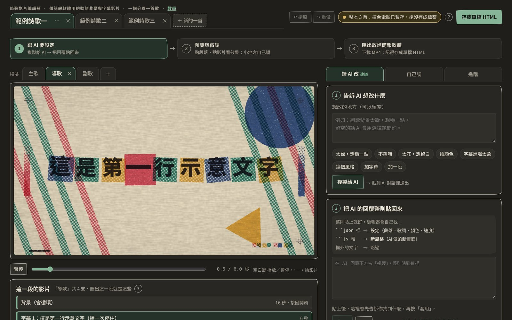
1 2 3 4 5 6 7 8 9 10在「請 AI 改」分頁最下面。開場白裡有完整做法，任何 AI 看了都會照著做。
編輯器會自己找出要用的部分。AI 的回覆通常長這樣：
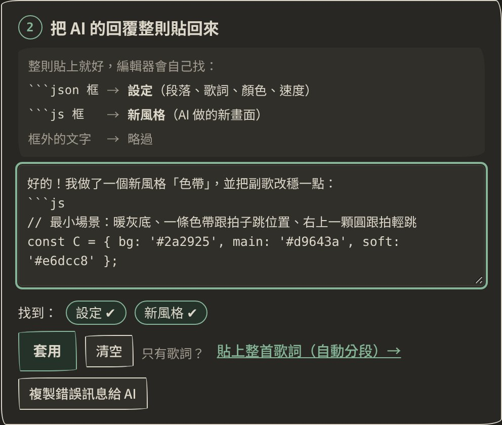
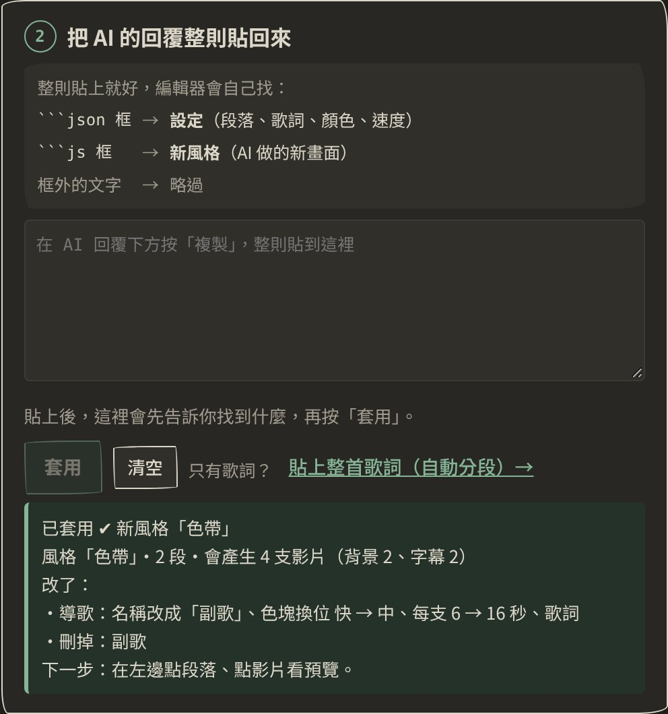
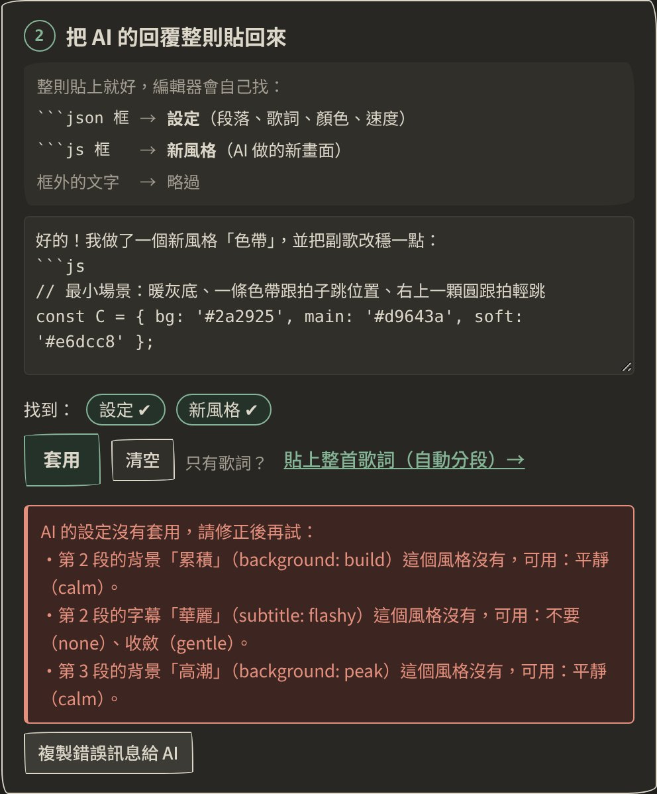
「自己調」分頁 → 按「貼上整首歌詞（自動分段）」，在跳出的視窗貼進去按「分到各段」，看過預覽再按「套用」。
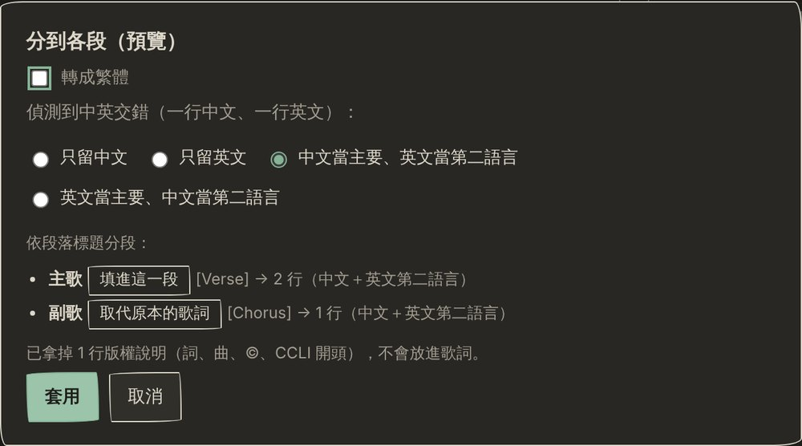
中文和英文都會唱的段落，做成兩段（例如「副歌（中）」「副歌（英）」），英文那段勾「大小對調」。
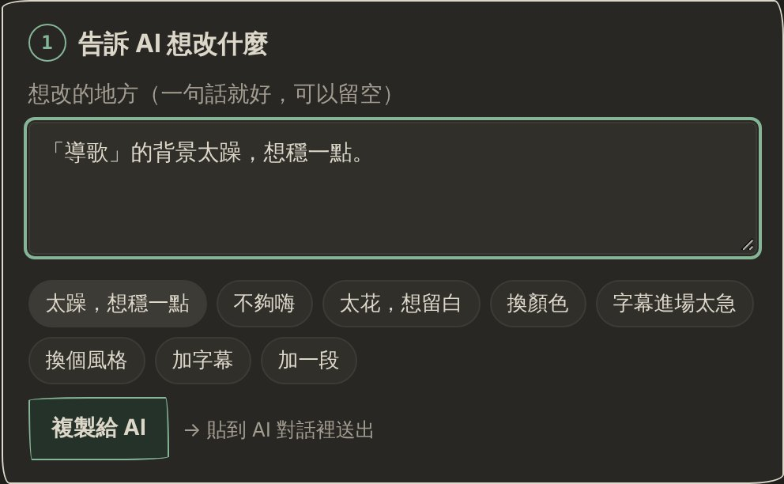
| 你覺得… | 可以這樣寫 |
|---|---|
| 太躁、看了累 | 副歌背景跳太快，想穩一點 |
| 不夠嗨 | 導歌不夠嗨，想更有能量 |
| 太亂、太花 | 主歌太滿，想多留白 |
| 顏色不對 | 顏色太刺眼，想用教會的墨綠 |
| 字出來太急 | 字幕進場太快，慢一點 |
| 字停太短 | 每句字幕停久一點 |
| 放大的字不對 | 第二句想放大「熱」 |
| 說不出來 | （留空，讓 AI 問你） |
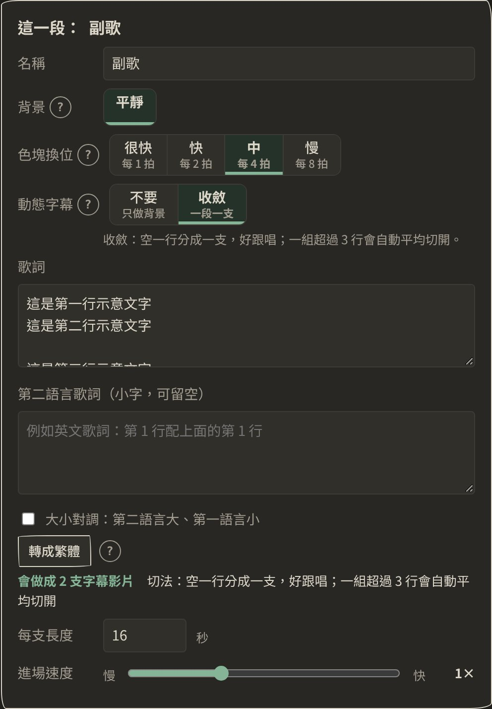
背景：同一個風格，從安靜到熱鬧。字幕影片底下也是這段選的背景。
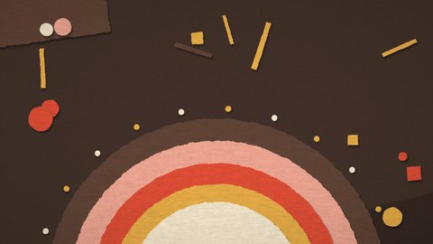
配色：點色票換顏色，例如改成墨綠底
色塊換位：很快／快／中／慢，越慢畫面越穩（動態效果，預覽裡看最準）
預覽下方的「這一段的影片」列出這一段會匯出的所有影片。
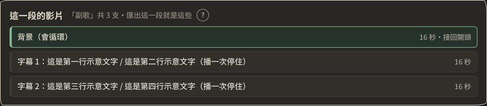
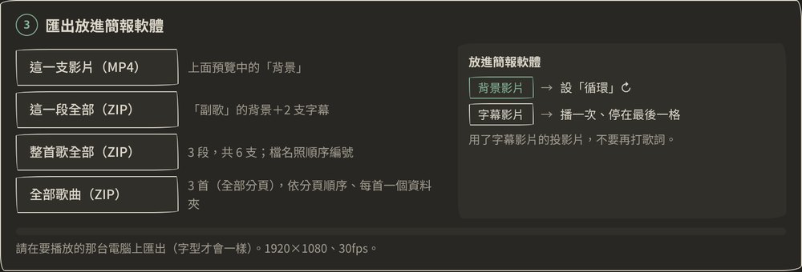
看右上角的狀態：這台電腦已暫存，還沒存成檔案 就是還沒存；已存成檔案 才安全。
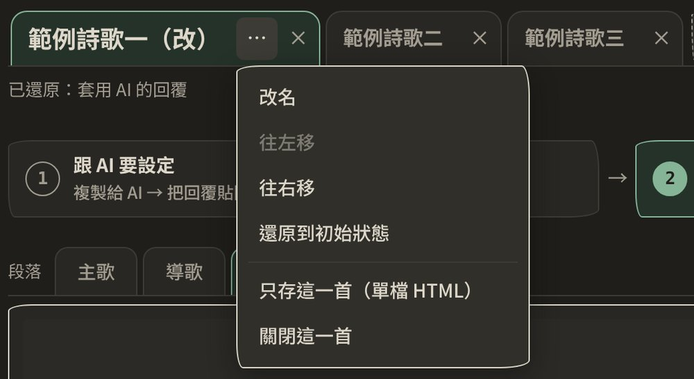
「＋ 新的一首」開新分頁，原本的歌還在。別人傳來的單檔 HTML，用 Chrome 打開就是那一本的編輯器。
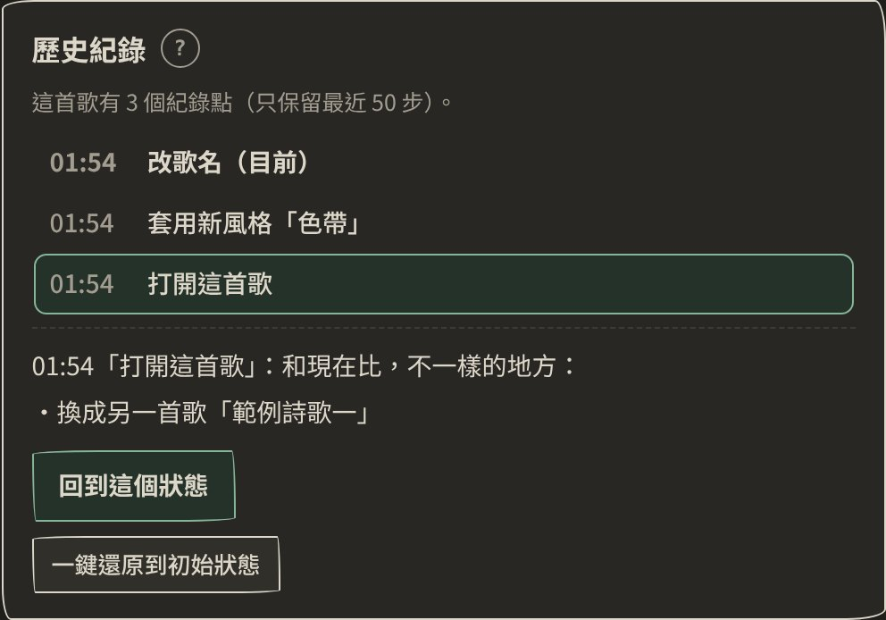
回到舊狀態、還原到初始狀態，也都可以再按「↶ 還原」反悔。
例如「想要海面」「像木刻版畫」。拿到之後跟一般回覆一樣，整則貼回來。
字幕影片底下的背景，就是這一段選的背景（平靜、累積或高潮）。
[ ] 標的字會放大（每行一個）。適合導歌、宣告句。每種都有平靜、累積、高潮三種背景，華麗、收斂兩種字幕。
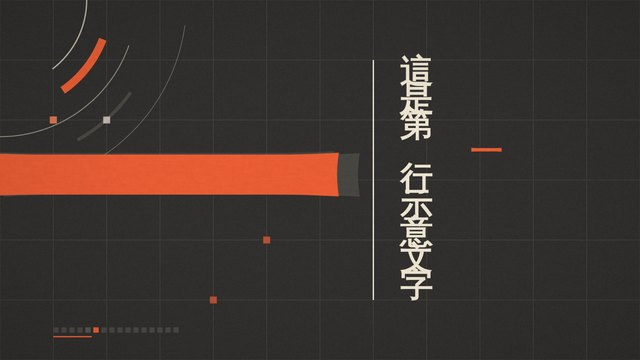
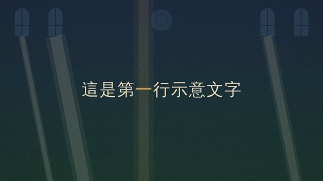
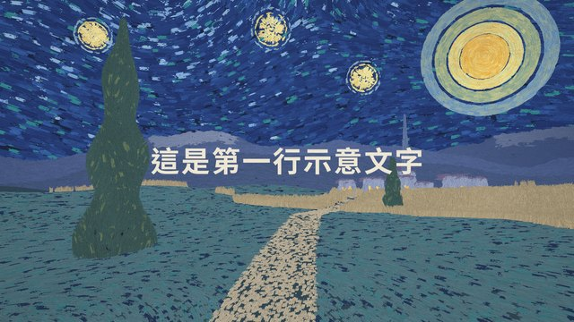
每次 AI 給完，最後都會附一句「下次可以這樣說」。多用幾次就會了。
歌名＿＿，感覺＿＿，畫面像＿＿，＿＿段要動態字幕，顏色＿＿。
＿＿段的（背景／字幕）太＿＿，希望＿＿一點，像＿＿那樣。
改用最新版 Chrome 或 Edge 打開。換了還不行，就換一台電腦試，最好是要播放的那台。
代表是在某個預覽視窗裡看（例如聊天畫面裡的預覽）。可以看、可以改；要匯出或試新風格，請用 Chrome 打開編輯器，或打開存好的單檔 HTML。
多半是用滑鼠選取，漏了 ``` 框線。改用 AI 回覆下方的「複製」按鈕再貼一次。
先看上面的歌曲分頁；關掉的分頁從「最近關閉」叫回來；改壞了用「↶ 還原」或歷史紀錄。換了電腦或清過瀏覽器資料，就打開存好的單檔 HTML。
正常，每一格都要算。整首歌匯出時，不要切走、不要關分頁。
背景要乾淨，歌詞交給簡報軟體；要字在影片裡，就用動態字幕。
在「自己調」填歌的速度（BPM）。不知道就留 120，畫面本來就只是跟著大概的拍子跳。
空白鍵播放／暫停，← → 換上一支／下一支影片，Ctrl＋Z 還原。設定檔或存好的單檔 HTML 直接拖進視窗就打開。
可以照樣貼。不過歌詞自己用「貼上整首歌詞」貼最準，AI 也不用重打一次。